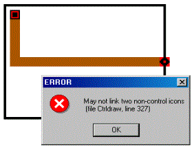

You draw controls using the links drawing tools previously described in the "Working with the SketchPad" section. When you finalize the drawing of a set of control links, the appropriate icons will be placed upon the SketchPad depending on where the link originates and where it terminates. For example, if you begin drawing a control link directly on a zone icon, a sensor icon will be placed adjacent to the zone icon, and if you terminate a control link on an airflow path, an actuator icon will be placed adjacent to the airflow path icon (See Figure below).
Figure – Control link icons
If you terminate a control link on a blank cell, a control node icon will be placed within that cell. You may not originate and terminate a link on a non-control node icon (e.g. zone, flow path or occupant) without an intermediate control node icon (See Figure below). This is due to the requirement that the input from an actuator to a non-control node icon must be in the form of a multiplier ranging from 0.0 to 1.0.

Figure – Invalid control link
Control node icons can have up to four links into or out of them depending on the type of control node you are defining. If a control node icon is not yet defined, ContamW will only allow you to draw at most two inputs (one vertical and one horizontal) into the node and at most four outlets from the node. However, if the control node icon is already defined, ContamW will only allow the correct set of links to be defined into the icon depending on the control element type (See Control Element Types) of the control node. This is due to the input signal convention of control nodes that distinguishes two different inputs signals for certain element types, e.g. limit controls, or to establish the order of operators for non-commutative mathematical operations, e.g. subtraction and division. As shown in the Figure below, Input Signal 1 enters either from the left or right and Input Signal 2 enters from either the top or bottom of the node. Details on input signals are provided for each element type where required in the description of the specific elements.

Figure – Control node input signal convention